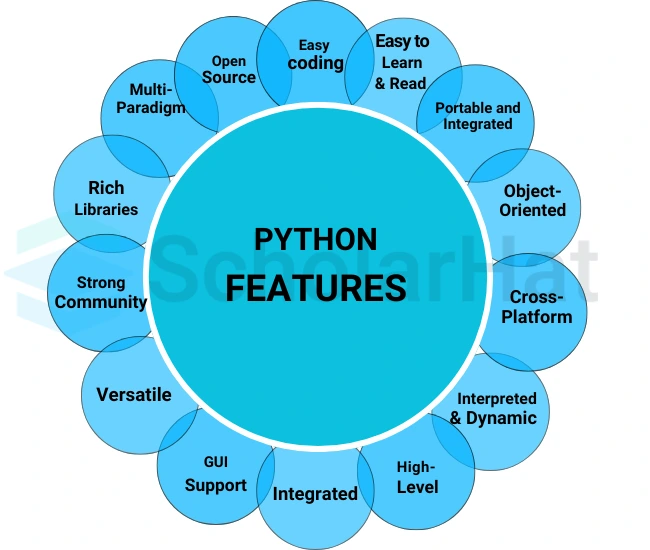

Python is a powerful and versatile programming language. It has many features that make it popular among beginners and professionals alike.

Python’s syntax is clean and easy to understand. Its code reads almost like English, which helps beginners focus on learning programming logic instead of complicated rules.
Example:
print("Hello World")
Even complex programs in Python are shorter and easier to read compared to languages like C++ or Java.
Python is an interpreted language. This means that Python executes your code line by line, immediately showing errors if they exist.
In Python, you do not need to declare the type of a variable. Python automatically assigns the type based on the value.
Example:
x = 10 # x is an integer
x = "Babu" # now x is a string
This feature makes Python flexible and faster to write.
Python supports Object-Oriented Programming (OOP), which allows you to create classes, objects, and reuse code efficiently.
Python comes with a huge built-in library of modules for tasks like:
This saves time and makes Python suitable for many applications.
Python works on multiple operating systems:
You can write a Python program once and run it anywhere without major changes.